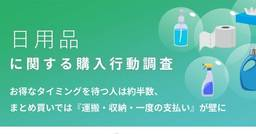
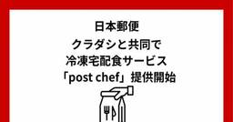
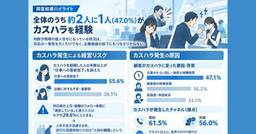
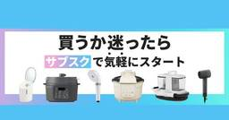
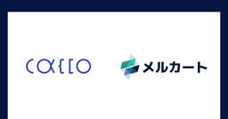
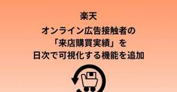

ECのミカタ
https://ecnomikata.com
ネットショップ運営を支援するビジネスポータル「ECのミカタ」。手間をかけずに、貴社ネット通販事業の収益性・業務効率性を高めるヒントを手に入れることが出来ます。
フィード
LINEヤフー、トレカの販売手数料・落札システム利用料が0円になるキャンペーンを実施
ECのミカタ
LINEヤフー株式会社が運営する「Yahoo!フリマ」と「Yahoo!オークション」は2026年10月5日、対象となるトレカの販売手数料・落札システム利用料が0円になるキャンペーン（以下、本キャンペーン）を開始した。また、10月中旬には、トレカの出品情報や、価格相場などの関連情報をまとめて確認できる「トレカタブ」をアプリ内に新設し、順次公開する。
2日前

約3割が「持ち帰り」「運搬」を理由にまとめ買いの予定を変更 GeNiE調査
ECのミカタ
GeNiE株式会社は2026年10月2日、「日用品の購入行動と支払い手段に関する実態調査」の結果を発表した。
2日前
au PAY マーケットが「日曜サンキューDAY」を開始 「毎週日曜だけの3大特典」を提供
ECのミカタ
auコマース&ライフ株式会社は2026年10月2日、「au PAY マーケット」において、毎週日曜日のお買い物がさらにおトクになる「日曜サンキューDAY」を開始することを発表した。10月4日は、同キャンペーンの第1回開催となった。
2日前
Shopify、新たなビジュアルデザインワークスペース「Canvas」を発表 AIとの対話でストアをデザイン
ECのミカタ
Shopify Japan株式会社は2026年10月2日、ShopifyのAIアシスタント「Sidekick」との対話を通じてオンラインストアをデザインできる、新たなビジュアルデザインワークスペース「Canvas」を発表した。
2日前
バナーやLPの修正指示を圧倒的に時短！ アカウント登録不要の「AUN」がEC運営のスピードを加速させる
ECのミカタ
ECサイトの運営において、商品ページの更新やキャンペーンバナーの差し替えは、売上拡大に欠かせない日常業務だ。しかし、制作会社やデザイナーへ修正指示を出す際、画面をキャプチャし、画像編集ソフトで赤字を入れ、メールやチャットで送る――。こうした煩雑な作業に時間を奪われていないだろうか。こうした修正指示の手間を大幅に軽減するのが、株式会社フォノグラムが提供するビジュアルコミュニケーションツール「AUN（あうん）」だ。延べ300万人以上が利用し、Webの修正指示にかかる手間を従来の6分の1に短縮できるという。具体的な機能やEC業界での活用法について、同社の山崎博行氏に話を聞いた
2日前

日本郵便、クラダシと共同で冷凍宅配食サービス「post chef」提供開始
ECのミカタ
日本郵便株式会社は2026年10月2日、株式会社クラダシと共同で展開する郵便局の冷凍宅配食「post chef（ポストシェフ）」について、10月8日から郵便局に設置されたタブレット端末、郵便局のネットショップ（WEB）および電話を通じて提供を開始することを発表した。
3日前
日本直販、調剤薬局事業に参入 東京都品川区に「日本直販薬局」を開局
ECのミカタ
日本直販株式会社は2026年10月1日、新たに調剤薬局事業へ参入。東京都品川区に第一号店となる「日本直販薬局」を開局した。
3日前
LINEヤフー、「Mini Apps Partner Program」参加 「LINEミニアプリ」の収益を向上
ECのミカタ
LINEヤフー株式会社は2026年10月1日、同社が提供するコミュニケーションアプリ「LINE」において、Apple Inc.（以下、Apple）が提供する「Mini Apps Partner Program」に参加すると発表した。
3日前

カスハラ「たらい回し」「過度な待機時間」が最大の発生要因 リンク調査
ECのミカタ
株式会社リンクは2026年10月1日、「問い合わせ窓口業務におけるカスタマーハラスメント実態調査」の結果を発表した。※本調査における「カスタマーハラスメント」とは、顧客や取引先などからの不当または過度な要求・暴言・脅迫といった行為で従業員の業務遂行を妨げることを指す。
3日前
Qoo10、体験型施設「SAMPLE HOUSE」を東京都渋谷区にオープン
ECのミカタ
Qoo10は2026年10月1日、ブランドと消費者をつなぐ新たな商品体験価値を発信するため、体験型施設「SAMPLE HOUSE（サンプルハウス）」を東京都渋谷区にオープンした。
3日前
「おすすめ」だけで終わらない！ 中川政七商店のリアルタイム・レコメンド高度活用アプローチ
ECのミカタ
「日本の工芸を元気にする！」をビジョンに掲げる中川政七商店。2026年2月期の売上高は100億円を突破し、4期連続で過去最高業績を更新した。そのEC戦略を支えるのが、シルバーエッグ・テクノロジー株式会社のAI搭載リアルタイム・レコメンドサービス「アイジェント・レコメンダー」だ。商品提案にとどまらず、特集ページ、メルマガ作成、商品選定にもリアルタイムで把握したユーザーの行動データを活用し、レコメンド経由の売上比率が従来の2倍超に伸長したという。株式会社中川政七商店 経営企画室の中田勇樹氏に、「アイジェント・レコメンダー」の具体的な活用方法について聞いた。
3日前

アイリスプラザ、家電のサブスクサービスに「使って納得プラン」を新たに追加
ECのミカタ
株式会社アイリステックサービスは2026年9月30日、アイリスオーヤマ公式通販サイト「アイリスプラザ」で提供している、家電のサブスクリプションサービスに「使って納得プラン」を追加した。
4日前

メルカート、Caccoが提供する「不正検知サービス」との標準連携を開始
ECのミカタ
株式会社メルカートは2026年9月30日、かっこ株式会社（以下、Cacco）が提供する不正検知サービス「O-PLUX Payment Protection（オープラックス ペイメントプロテクション）」との標準連携を開始した。
4日前
Stripe、「Stripe Tour Tokyo 2026」にて日本市場への継続投資と新製品を発表
ECのミカタ
ストライプジャパン株式会社（以下、Stripe）は2026年9月30日、各業界のビジネスリーダーや専門家が一堂に会する「Stripe Tour Tokyo 2026」を開催した。
4日前

楽天、オンライン広告接触者の「来店購買実績」を日次で可視化する機能を追加
ECのミカタ
楽天グループ株式会社（以下、楽天）は2026年9月30日、楽天グループが持つサービスやメディアに配信できる運用型広告「RMP - Unified Ads」において、「楽天ポイントカード」導入企業を対象に、オフラインにおける購買転換率を計測する機能（※）を追加した。※実店舗において「楽天ポイントカード」を提示して決済した購買実績のみ計測が可能
4日前
Yahoo!ショッピング、新ストア「うろこざっか」開設 日用品や生活雑貨が中心
ECのミカタ
LINEヤフー株式会社が運営する「Yahoo!ショッピング」は2026年9月30日、日用品や生活雑貨を中心とした新たなオンラインストア「うろこざっか by Yahoo!ショッピング（以下、うろこざっか）」を開設した。
4日前
海外アパレルをネットで購入した約6割が「サイズ・イメージ違い」を経験 NEXER調査
ECのミカタ
株式会社NEXER Group（以下、NEXER）は2026年9月30日、グローバル返品ソリューションReturn Helper株式会社と共同で、「海外アパレル通販のサイズ・イメージ違いと返品実態」に関するアンケート結果を発表した。
5日前
日本直販、ByteDanceと「グローバルパートナー契約」新たな広告DX事業へ発展
ECのミカタ
日本直販株式会社は2026年9月29日、TikTokをはじめ世界的なコンテンツプラットフォームを展開するByteDance株式会社と、グローバルパートナー契約を締結したことを発表した。
5日前
「TikTok Ad Awards 2026 Japan」受賞作品発表 グランプリは日清食品
ECのミカタ
TikTok for Businessは2026年9月29日、広告主・広告代理店を対象としたイベント「TikTok Marketing Summit 2026」を開催。イベント内で「TikTok Ad Awards 2026 Japan」の贈賞式が行われた。
5日前